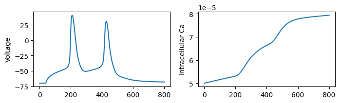

Ion dynamics¶
In this tutorial, you will learn how to:
- define ion pumps
- update reversal potentials with the Nernst equation
- diffuse ions within the cell
Here is a code snippet which you will learn to understand in this tutorial:
import jaxley as jx
from jaxley.pumps import CaPump, CaNernstReversal
from jaxley_mech.channels.l5pc import CaHVA
branch = jx.Branch()
cell = jx.Cell(branch, parents=[-1, 0, 0])
# Insert a voltage-gated calcium channel.
cell.insert(CaHVA())
# Insert a mechanism which modifies the intracellular calcium based on the calcium current.
cell.insert(CaPump())
# Insert a mechanism that updates the calcium reversal potential based on the intracellular calcium level.
cell.insert(CaNernstReversal())
# Let the intracellular calcium diffuse within the cell.
cell.diffuse("CaCon_i")
cell.set("axial_diffusion_CaCon_i", 2.0)
# Record the intracellular calcium concentration and simulate.
cell.record("CaCon_i")
cacon_i = jx.integrate(cell, t_max=100.0, delta_t=0.025)
This tutorial assumes that you have already learned how to build basic simulations. It is also helpful to have read the tutorial on how to build ion channel models in Jaxley.
from jax import config
config.update("jax_enable_x64", True)
config.update("jax_platform_name", "cpu")
import matplotlib.pyplot as plt
import numpy as np
import jax
import jax.numpy as jnp
from jax import jit
import jaxley as jx
from jaxley.channels import Na, K, Leak
First, we define a cell as you saw in the previous tutorial and insert sodium, potassium, and leak ion channels:
comp = jx.Compartment()
branch = jx.Branch(comp, ncomp=4)
cell = jx.Cell(branch, parents=[-1, 0, 0, 1, 1, 2, 2])
cell.insert(Na())
cell.insert(K())
cell.insert(Leak())
In this tutorial, we will set up a neuron with detailed calcium dynamcis. We will define all channels and pumps from scratch, but you could also just import these channels and run:
from jaxley.channels import CaCurrentToConcentrationChange, CaNernstPotential
from jaxley_mech.channels.l5pc import CaHVA
cell.insert(CaHVA()) # Insert a voltage-gated calcium channel.
cell.insert(CaCurrentToConcentrationChange()) # Modify intracellular calcium based on Ca-current.
cell.insert(CaNernstPotential()) # Insert a mechanism that updates the calcium reversal potential.
A voltage-gated calcium channel¶
Let’s start by defining a voltage-gated calcium ion channel. This is done as is described in the tutorial on building channel models:
from jaxley.channels import Channel
from jaxley.solver_gate import solve_gate_exponential, save_exp
class CaHVA(Channel):
"""High-Voltage-Activated (HVA) Ca2+ channel"""
def __init__(self, name=None):
self.current_is_in_mA_per_cm2 = True
super().__init__(name)
self.channel_params = {
f"{self._name}_gCaHVA": 0.00001, # S/cm^2
}
self.channel_states = {
f"{self._name}_m": 0.1, # Initial value for m gating variable
f"{self._name}_h": 0.1, # Initial value for h gating variable
"eCa": 0.0, # Initial value for reversal potential, mV.
}
self.current_name = f"i_Ca"
def update_states(self, states, dt, voltages, params):
"""Update state of gating variables."""
prefix = self._name
ms, hs = states[f"{prefix}_m"], states[f"{prefix}_h"]
m_new = solve_gate_exponential(ms, dt, *self.m_gate(voltages))
h_new = solve_gate_exponential(hs, dt, *self.h_gate(voltages))
return {f"{prefix}_m": m_new, f"{prefix}_h": h_new, "eCa": states["eCa"]}
def compute_current(self, states, voltages, params):
"""Compute the current through the channel."""
prefix = self._name
ms, hs = states[f"{prefix}_m"], states[f"{prefix}_h"]
ca_cond = params[f"{prefix}_gCaHVA"] * (ms**2) * hs
current = ca_cond * (voltages - states["eCa"])
return current
def init_state(self, states, voltages, params, delta_t):
"""Initialize the state such at fixed point of gate dynamics."""
prefix = self._name
alpha_m, beta_m = self.m_gate(voltages)
alpha_h, beta_h = self.h_gate(voltages)
return {
f"{prefix}_m": alpha_m / (alpha_m + beta_m),
f"{prefix}_h": alpha_h / (alpha_h + beta_h),
}
@staticmethod
def m_gate(v):
"""Voltage-dependent dynamics for the m gating variable."""
alpha = (0.055 * (-27 - v + 1e-6)) / (save_exp((-27.0 - v + 1e-6) / 3.8) - 1.0)
beta = 0.94 * save_exp((-75.0 - v + 1e-6) / 17.0)
return alpha, beta
@staticmethod
def h_gate(v):
"""Voltage-dependent dynamics for the h gating variable."""
alpha = 0.000457 * save_exp((-13.0 - v) / 50.0)
beta = 0.0065 / (save_exp((-v - 15.0) / 28.0) + 1.0)
return alpha, beta
Note two things:
- we named the current through this channel as i_Ca. This happens by defining self.current_name = "i_Ca" and will be useful to define the pump (which depends on the calcium current)
- the current through this channel depends on the reversal potential (named eCa): current = ca_cond * (voltages - u["eCa"]). The reversal potential will later on be updated based on the intracellular calcium concentration.
Let’s insert this channel into our cell:
cell.insert(CaHVA())
A calcium ion pump¶
Next, we would like to modify the intracellular calcium ion concentration and then update the calcium reversal potential. In Jaxley, everything that modifies intracellular ion concentration is called a Pump. A Pump is very similar to a Channel, with two differences:
- it has to define which ion concentration (Ca, Na,…) should be modified (by setting self.ion_name = "CaCon_i")
- its compute_current method will modify the ion concentration, not the membrane voltage (as would be the case for a Channel).
Let’s define a Pump for calcium ions:
from jaxley.pumps import Pump
class CaPump(Pump):
"""Calcium dynamics tracking inside calcium concentration."""
def __init__(self, name=None):
super().__init__(name)
self.channel_params = {
f"{self._name}_gamma": 0.05, # Fraction of free calcium (not buffered).
f"{self._name}_decay": 80, # Buffering time constant in ms.
f"{self._name}_depth": 0.1, # Depth of shell in um.
f"{self._name}_minCai": 1e-4, # Minimum intracell. ca concentration in mM.
}
self.channel_states = {"i_Ca": 1e-8, "CaCon_i": 5e-05}
self.ion_name = "CaCon_i"
self.current_name = "i_CaPump"
def update_states(self, states, dt, v, params):
"""Update states if necessary (but this pump has no states to update)."""
return {"CaCon_i": states["CaCon_i"], "i_Ca": states["i_Ca"]}
def compute_current(self, states, modified_state, params):
"""Return change of calcium concentration based on calcium current and decay."""
prefix = self._name
ica = states["i_Ca"]
gamma = params[f"{prefix}_gamma"]
decay = params[f"{prefix}_decay"]
depth = params[f"{prefix}_depth"]
minCai = params[f"{prefix}_minCai"]
FARADAY = 96485 # Coulombs per mole.
# Calculate the contribution of calcium currents to cai change.
drive_channel = -10_000.0 * ica * gamma / (2 * FARADAY * depth)
state_decay = (modified_state - minCai) / decay
diff = drive_channel - state_decay
return -diff
def init_state(self, states, v, params, delta_t):
"""Initialize states of channel."""
return {}
As you can see, the CaPump defines an ion_name:
self.ion_name = "CaCon_i"
CaHVA channel. In the CaHVA channel, we had defined self.current_name = "i_Ca", so we can access this current in the compute_current() method of the CaPump:
ica = states["i_Ca"]
Let’s add the calcium pump to the cell:
cell.insert(CaPump())
If you do not want mechanisms such as calcium buffering (which are included in the model above), but you simply want to convert the calcium current to a change in intracellular concentration, use:
from jaxley.pumps import CaFaradayConcentrationChange
cell.insert(CaFaradayConcentrationChange())
Updating the calcium reversal potential¶
The CaPump modifies the intracellular calcium ion concentration. So far, however, updating the intracellular calcium ion concentration does not impact the voltage dynamics at all (feel free to check the CaHVA channel above: neither its update_states() nor its compute_current() directly depend on states["CaCon_i"]). To change this, we would like to modify the calcium reversal potential eCa based on the intracellular calcium concentration (again, check the CaHVA channel: its compute_current() does depend on states["eCa"]).
The update to the reversal potential is done via the Nernst equation, which itself can be implemented via a Channel in Jaxley. For example:
class CaNernstReversal(Channel):
"""Compute Calcium reversal from inner and outer concentration of calcium."""
def __init__(self, name=None):
self.current_is_in_mA_per_cm2 = True
super().__init__(name)
self.channel_constants = {
"F": 96485.3329, # C/mol (Faraday's constant)
"T": 279.45, # Kelvin (temperature)
"R": 8.314, # J/(mol K) (gas constant)
}
self.channel_params = {}
self.channel_states = {"eCa": 0.0, "CaCon_i": 5e-05, "CaCon_e": 2.0}
self.current_name = f"i_Ca"
def update_states(self, states, dt, voltages, params):
"""Update internal calcium concentration based on calcium current and decay."""
R, T, F = (
self.channel_constants["R"],
self.channel_constants["T"],
self.channel_constants["F"],
)
Cai = states["CaCon_i"]
Cao = states["CaCon_e"]
C = R * T / (2 * F) * 1000 # mV
vCa = C * jnp.log(Cao / Cai)
return {"eCa": vCa, "CaCon_i": Cai, "CaCon_e": Cao}
def compute_current(self, states, voltages, params):
"""This dynamics model does not directly contribute to the membrane current."""
return 0
def init_state(self, states, voltages, params, delta_t):
"""Initialize the state at fixed point of gate dynamics."""
return {}
The CaNernstReversal modifies the reversal potential eCa in its update_states method.
We can insert this mechanism as always:
cell.insert(CaNernstReversal())
Ion diffusion¶
In principle, we could already run this simulation. Optionally, we can add one more feature: ion diffusion. Ion diffusion can be turned on with the .diffuse() method in Jaxley (if you do not run the .diffuse() method, then ions do not diffuse). In this case, we would like to diffuse the intracellular calcium concentration:
cell.diffuse("CaCon_i")
We can define how strongly calcium diffuses by setting its axial resistivity:
cell.set("axial_diffusion_CaCon_i", 1.0) # Higher values -> More diffusion.
⚠️ IMPORTANT!
axial_diffusion_CaCon_imust be strictly positive in the entire cell. We do not allow0.0, but you can use small values like1e-8.
Running the simulation¶
We can now record voltage or intracellular calcium concentration from our cell, stimulate it with a step current, and simulate:
t_max = 20.0
dt = 0.025
cell.delete_recordings()
cell.delete_stimuli()
cell.branch(0).comp(0).record("v")
cell.branch(0).comp(0).record("CaCon_i")
cell.branch(0).comp(0).stimulate(jx.step_current(1.0, 10.0, 0.03, dt, t_max))
v_and_ca = jx.integrate(cell, delta_t=dt, t_max=t_max)
Added 1 recordings. See `.recordings` for details.
Added 1 recordings. See `.recordings` for details.
Added 1 external_states. See `.externals` for details.
time_vec = np.arange(0, t_max + dt * 2, dt)
fig, ax = plt.subplots(1, 2, figsize=(8, 2))
_ = ax[0].plot(v_and_ca[0])
_ = ax[1].plot(v_and_ca[1])
_ = ax[0].set_ylabel("Voltage")
_ = ax[1].set_ylabel("Intracellular Ca")

That’s it! In this tutorial, you should have learned how to model detailed intracellular ion (in particular calcium) dynamics.